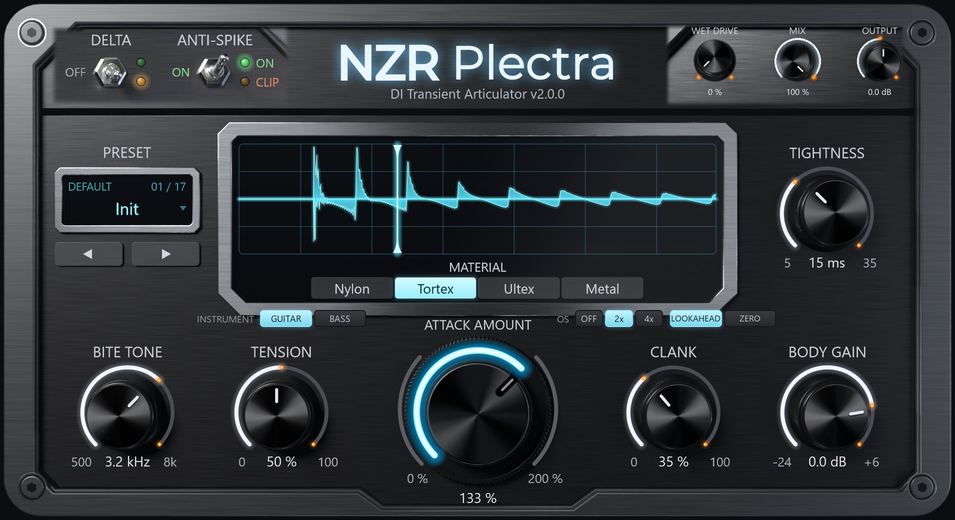

A · Header strip
Three small knobs sit right of the logo. DELTA and ANTI-SPIKE move left. The switches become small keys around the display.
- Window
- Same size, 955 × 520 in the mock-up.
- Cost, from the image
- The three knobs are the smallest on the panel and have no room for range numbers. The switch captions are the smallest text on it.